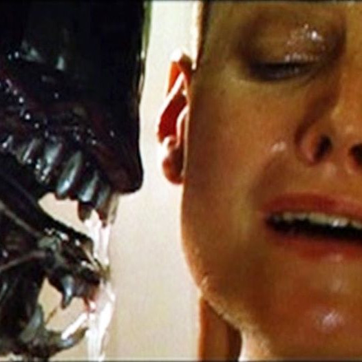

Some David Fincher
the films
a quote
take action
David Fincher is awesome
He is one of the statues in American cinema - one of the all-time greats. I've made this site to showcase his first four films.
Dave Rules
The Films

Fincher continued the work of giants Ridley Scott and James Cameron with his iconic debut
His sophomore offering redefinied and distorted the noir genre with Shakearean weight
The wholly unique Game breaks the mind and is cemented as an immovable cult classic
Fincher's fourth film helped shape a generation and proved his cinematic longevity
The fact is, you don’t know what directing is until the sun is setting and you’ve got to get five shots and you’re only going to get two.
-David Fincher, Filmmaker
Call to action! It's time!
This button does nothing. But by clicking it, you agree that David Fincher does, in fact, rule. Congratulations.
Dave Rules